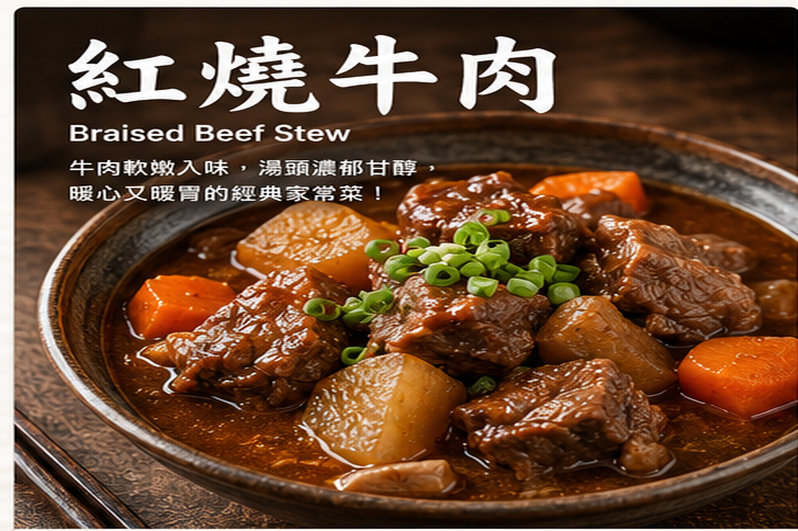
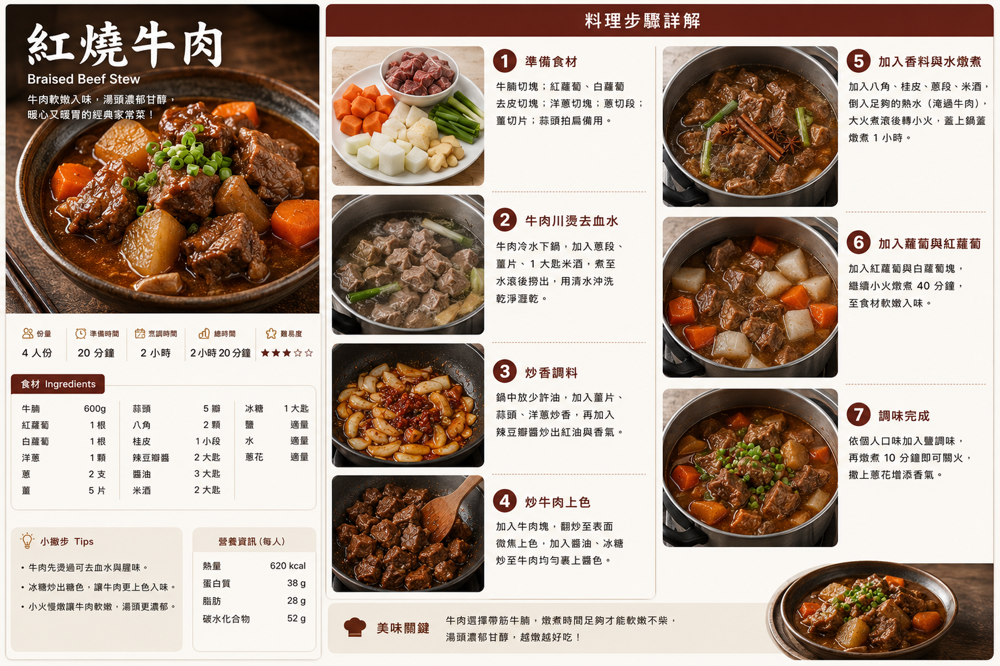

紅燒牛肉
牛肉先汆燙去腥，再以豆瓣醬、醬油與辛香料炒出香氣，慢燉至軟嫩入味，搭配白蘿蔔與胡蘿蔔，湯汁濃郁、非常下飯。
食譜指南
點擊可放大檢視 🔍
料理步驟
共 7 步01
牛肉切成約 3–4 公分塊，冷水下鍋，加入薑片、青蔥段與米酒；煮至水滾後撈出，用清水沖洗乾淨並瀝乾。
02
胡蘿蔔與白蘿蔔切滾刀塊，洋蔥切塊，青蔥切段；薑切片、大蒜拍扁，備好八角與月桂葉。
03
炒鍋加入沙拉油，中小火放入薑片、大蒜、洋蔥、青蔥、八角與月桂葉炒香，再加入辣豆瓣醬炒出紅油與香氣。
04
加入瀝乾的牛肉塊翻炒，讓表面均勻上色；加入醬油、米酒與砂糖拌炒，使牛肉充分裹上醬色。
05
倒入水至大致淹過牛肉，大火煮滾後撇去浮沫，轉小火並蓋上鍋蓋，慢燉約 80 分鐘。
06
加入白蘿蔔與胡蘿蔔，保持小火續燉約 30–40 分鐘，直到牛肉軟嫩、蔬菜熟透入味。
07
開蓋試味，依鹹度加入食鹽調整；再以小火煮約 10 分鐘讓湯汁融合，關火前撒上青蔥即可盛盤。